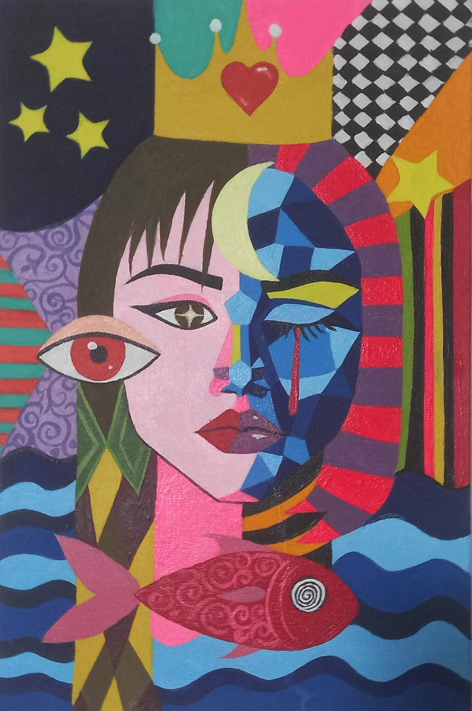

طهورا احدی، متولد ۲۶ نوامبر ۲۰۰۱ در شمیرانات تهران، از سن سهسالگی نقاشی را آغاز کرد. او با ذهنی پر از داستان، تلاش میکرد با نقاشی داستانهایش را بیان کند و در ادامه در نویسندگی نیز شکوفا شد. کتابهای «بالهای من» و «دست ویرانگر» از آثار چاپشدهی او هستند. نمایشنامهی «رز آبی» نیز به قلم او در جشنوارهی فجر نوشته شد. سبک هنریاش تلفیقی از سورئال، امپرسیونیسم و کوبیسم است که اغلب موضوعاتی فلسفی یا داستانی دارد. او رتبهی یک کنکور عملی هنر را در سال ۱۳۹۹ کسب کرد. طهورا هنر را وسیلهای برای تعالی روح میداند و معتقد است «نقاشان رازهای کاغذ و بوم را فاش میکنند».
